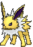

-
Bulbasaur #001

- Grama
- Veneno
Há uma semente de planta em suas costas desde o dia em que este Pokémon nasce. A semente cresce lentamente mais.
-
Ivysaur #002

- Grama
- Veneno
Quando o bulbo em suas costas cresce grande, parece perder a capacidade de ficar de pé em suas patas traseiras.
-
Venusaur #003

- Grama
- Veneno
Sua planta floresce quando está absorvendo energia solar. Ele permanece em movimento para buscar a luz solar.
-
Charmander #004

- Fogo
Tem preferência por coisas quentes. Quando chove, diz-se que o vapor jorra da ponta de sua cauda.
-
Charmeleon #005

- Fogo
Tem uma natureza bárbara. Na batalha, ele chicoteia sua cauda ardente e corta com garras afiadas.
-
Charizard #006

- Fogo
Ele cospe fogo que é quente o suficiente para derreter pedregulhos. Pode causar incêndios florestais soprando chamas.
-
Squirtle #007

- Àgua
Quando ele retrai seu longo pescoço em sua concha, ele esguicha água com força vigorosa.
-
Wartortle #008

- Àgua
É reconhecido como um símbolo de longevidade. Se sua concha tem algas, esse Wartortle é muito antigo.
-
Blastoise #009

- Àgua
Ele esmaga seu inimigo sob seu corpo pesado para causar desmaios. Em uma pitada, ele se retirará dentro de sua concha.
-
Caterpie #010

- Inseto
Para proteção, ele libera um fedor horrível da antena em sua cabeça para afastar os inimigos.
-
Jolteon #011
- Elétrico
Ele concentra as fracas cargas elétricas emitidas por suas células e lança raios perversos.
-
Pikachu #012

- Elétrico
Quando está com raiva, descarrega imediatamente a energia armazenada nas bolsas de suas bochechas.
-
Gengar #013

- Fantasma
- Veneno
Para roubar a vida de seu alvo, ele se esconde na sombra da presa e silenciosamente espera por uma oportunidade.
-
Jigglypuff #014

- Normal
- Fada
Quando seus olhos enormes vacilam, ele canta uma melodia misteriosamente reconfortante que embala seus inimigos para dormir.
-
flareon #015

- Fogo
O ar inalado é levado ao seu saco de chamas, aquecido e exalado como fogo que atinge mais de 3.000 graus Fahrenheit.
-
Meowth #016

- Normal
Tudo o que faz é dormir durante o dia. À noite, patrulha seu território com os olhos brilhando.
-
Metapod #017

- Inseto
Está esperando o momento de evoluir. Nesta fase, só pode endurecer, por isso permanece imóvel para evitar o ataque.
-
Mewtwo #018

- Psíquico
Seu DNA é quase o mesmo de Mew. No entanto, seu tamanho e disposição são muito diferentes.
-
Pidgey #019

- Normal
- Vôo
Muito dócil. Se atacado, muitas vezes chuta areia para se proteger, em vez de revidar.
-
Psyduck #020

- Àgua
É constantemente assolado por uma dor de cabeça. Quando a dor de cabeça fica intensa, ela começa a usar poderes misteriosos.
-
Snorlax #021

- Normal
Não fica satisfeito a menos que coma mais de 880 libras de comida todos os dias. Quando termina de comer, vai imediatamente dormir.
-
Weedle #022

- Veneno
- Inseto
Cuidado com o ferrão afiado em sua cabeça. Ele se esconde na grama e nos arbustos onde come folhas.